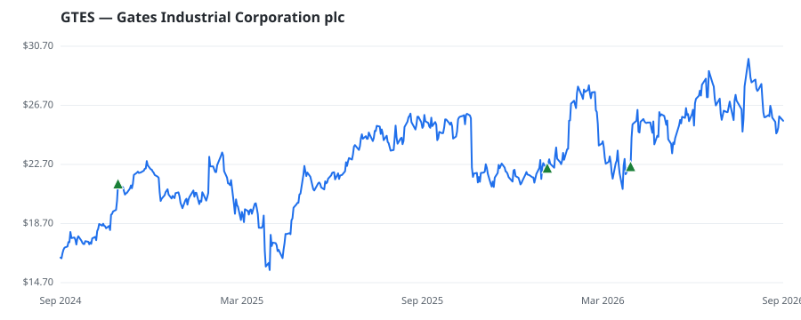

bullish · bearish · n/a — dots: price>SMA10 · SMA10>SMA50 · SMA50>SMA200 · up>down volume (20d)
Capital Goods · mid cap · ★ 2 buyer(s) sit on a committee that regulates this industry
Members who bought GTES earned a dollar-weighted +16.2% from their disclosure dates, versus +18.7% for the S&P 500 over the same holding windows (-2.5% alpha).

▲ green = a disclosed purchase · ▼ red = a disclosed sale (plotted on disclosure date)
Gates Industrial Corp PLC is a manufacturer of engineered power transmission and fluid power solutions. The company has two operating segments; Power Transmission and Fluid Power segments. The Power Transmission solutions convey power and control motion. It is used in applications in which belts, chains, cables, geared transmissions, or direct drives transfer power from an engine or motor to another part or system. The Fluid power solutions are used in applications in which hoses and rigid tubing assemblies either transfer power hydraulically or convey fluids, gases, or granular materials from GENERAL INDUSTRIAL MACHINERY & EQUIPMENT · website
| Revenue | $3.4B | Net income | $276.3M |
|---|---|---|---|
| Operating income | $465.3M | Diluted EPS | $0.96 |
| Assets | $7.2B | Equity | $3.7B |
| Member | Chamber | Out-performer | Disclosed buys $ | Return on buys |
|---|---|---|---|---|
| Josh Gottheimer ★ | house | — | $8K | +20.1% |
| Gilbert Cisneros ★ | house | — | $8K | +13.9% |
| Julia Letlow | house | — | $8K | +14.5% |
Disclosed $ figures are bracket midpoints — filings report ranges (e.g. $1,001–$15,000), not exact amounts.